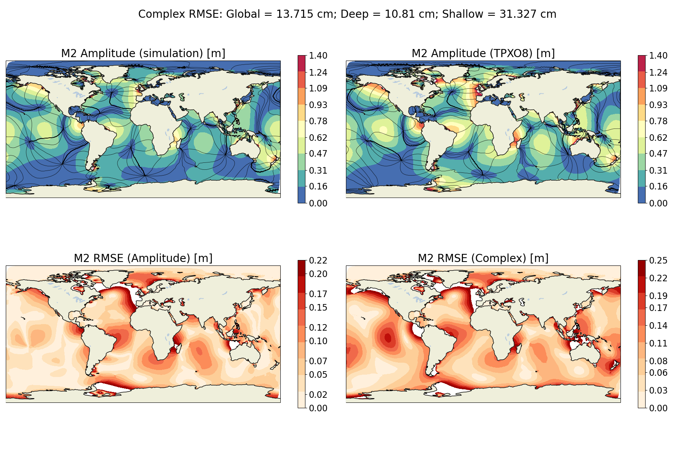

tides
The ocean/tides test group defines meshes,
initial conditions, forward simulations, and validation for global,
realistic ocean domains. These are single layer, barotropic simulations
forced with tidal potential. Self-attraction and loading effects are included
as well as a parameterization for topographic wave drag.
Wetting and drying is turned on in these configurations to prevent minimum
depth issues.
The tidal solution is decomposed into harmonic constituents during the
simulation and are compared with the TPXO database.
Currently, the icosaheral 7 mesh is supported with
more mesh resolutions to be added in the future.
mesh test case
The mesh test case produces the horizontal mesh. The base mesh has global coverage and is culled to remove land cells. Cells beneath ice shelves are retained in the mesh.
init test case
The init test performs steps to set up the vertical mesh, initial conditions, atmospheric forcing, and prepares the station locations for timeseries output.
remap bathymetry step
This step performs an integral remap of bathymetric data onto the MPAS-O mesh
interpolate wave drag step
In this step, a timescale factor from HYCOM data is interpolated onto the MPAS-O mesh to be used in the topographic wave drag parameterization. A plot is also produced to verify the interpolation.
initial state step
The initial state step runs MPAS-Ocean in init mode to create the initial condition file for the forward run. The vertical mesh is setup for a single layer.
forward test case
The forward test case is responsible for the forward model simulation and analysis.
forward step
The forward step runs a 125 day model simulation. The simulation begins with a spinup period, where the tides are ramped to their full value to avoid shocking the system. The harmonic analysis period begins following this spinup period.
analysis step
The analysis step extracts the harmonic constituent amplitude and phase values at each cell center from the TPXO database. The TPXO values are used to compute global, shallow, and deep RMS errors. The global MPAS-O and TPXO solutions are plotted along with the spatial error fields. Below is an example of the type of plots produced for the 5 major constituents.
{kind=link}